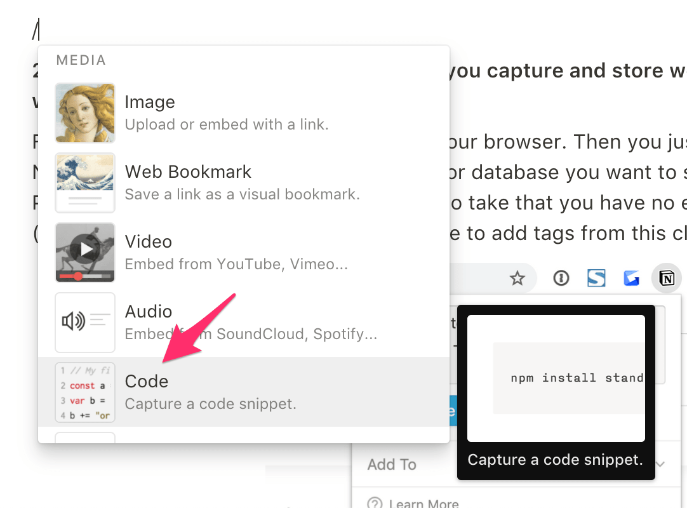
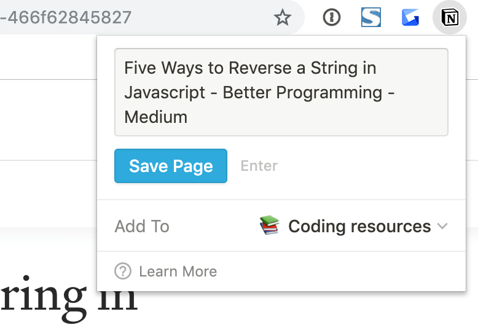
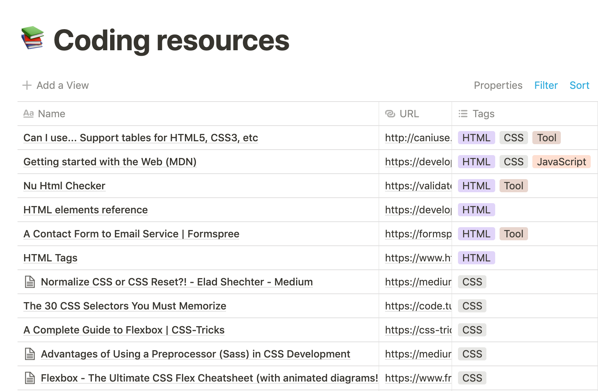
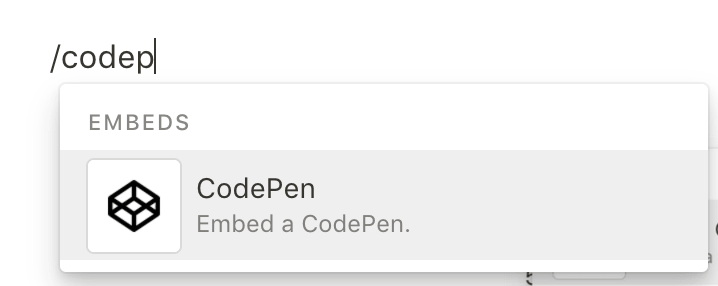
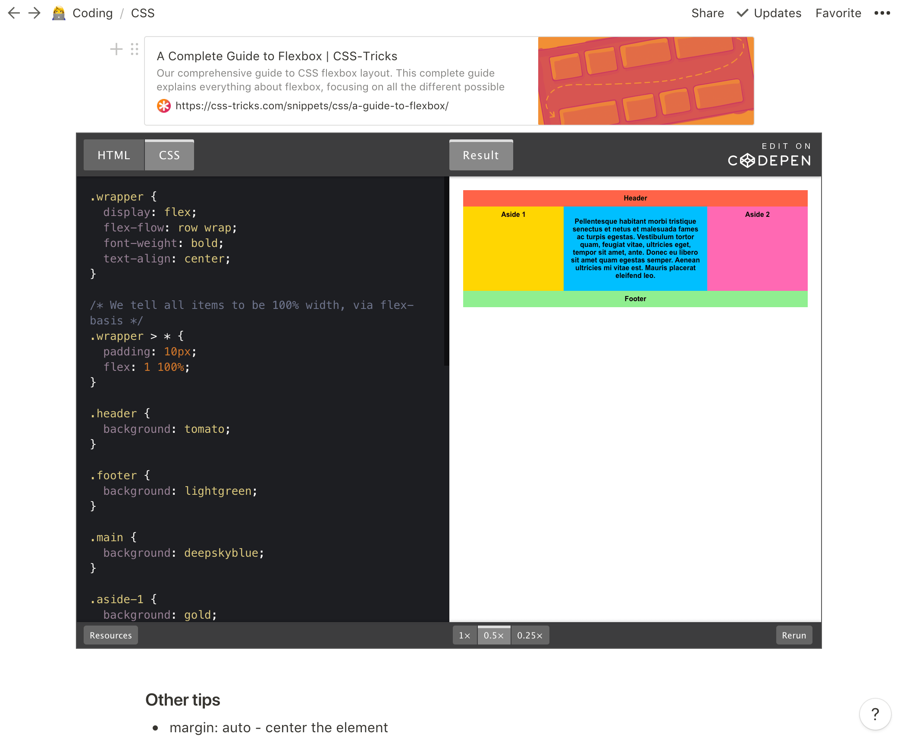

3 reasons why I recommend Notion for code learners
Notion is my new Evernote.
In this post, I will focus on the top 3 reasons why I believe it is a great note taking companion for people who are learning to code.
My shift from Evernote to Notion
Since I started studying code, I realized there are many coding tips you want to take note of and resources you want to refer to later. There is a wealth of valuable information on the web and I have been trying to find a good method to capture everything to assist my learning.
I have used Evernote for note taking purposes for 10 years now, and it had become my default go-to place any time I want to save something for later reference. However, there are a couple of pain points that I just couldn't keep ignoring. From simple actions such as changing the name of the notebook to adding a sample code in a code-friendly format are just too difficult and not very intuitive.
And this is where Notion comes in!
I heard about Notion from a random post I found on Medium written by a programmer, and it felt like something worth trying considering the pain points I've been having with Evernote. Ever since I signed up for the free version of Notion, I've realized that it is a great note taking companion for people who are learning to code. Although Notion is more than just a note taking app (see here for the product details) in this post I will focus specifically on why I recommend this tool for code learners.
3 reasons why Notion is a good tool for code learners
1. You can save code snippets in the appropriate language formatIn a Notion page, when you hit the slash "/" button you get a list of numerous actions you can take, such as creating headers, to do lists, kanban boards and embedding third party files. One of the actions I recommend for code learners is an obvious one: adding code snippets!
Once you type in your code or copy/paste from some tutorial, you can choose the appropriate language from the list and Notion will transform the code into a readable format for that specific language. Below is a JavaScript example:

The long list of languages shows you that Notion is a dedicated partner for all developers!
2. The Notion Web Clipper extension lets you store website bookmarks without any extra effort
So you found a coding tutorial article that you want to save for later use. What do you do? First, install the Notion Web Clipper in your browser. Then you just need to click the Notion icon in the top right corner of your browser, choose a page or database you want to save it to, then hit 'Save Page'. It is such a minimal action you need to take that you have no excuse not to use it! (Although I would prefer an option to be able to add tags from this clipper)
Another thing I like about it is that you can instantly save the clipped page to a database of your choice (I recommend the table view). This makes it much easier to organize, add tags, and refer to them later. This is what my coding resources database looks like:
You can also save webpages from your mobile device. For more details click here.
3. You can embed useful code from CodePen and Github GistSometimes you might want to save a useful code that someone else created on CodePen or Github Gist (or even one that you coded yourself!). With Notion, you can easily embed them in the page with a public URL. Just hit the slash "/" button (your new friend on Notion!) and start typing either "codepen" or "github". Select the appropriate icon and you will be prompted to enter a URL.
Below is how an embedded CodePen looks like. All the buttons (HTML, CSS, Result, etc) are clickable and if you want to play around with the code, just click on the top right section that says "Edit on CodePen".
When you're learning front end web development it helps to not only take note of the code, but also to see what the actual output looks like. Therefore being able to embed CodePen in Notion is pretty powerful.
How to start using Notion
Do you want to give Notion a try? Just sign up for free here and see if you like it! If you reach the storage limit and is wondering whether you should try out the paid version or not, you can first earn credits through actions such as logging in on their desktop app and mobile app. This will allow you to pay for the first few months of the paid version without having to spend your own money.

Thank you for taking the time to read the blog! If you tested out the Notion app, please share any useful note taking tips you have found!

Aiko Takemura
After working in the advertising industry in Japan for 12 years, Aiko moved to the US to be with her loving family. She is currently a full time mom of an energetic 2 year old boy and expecting another wild one very soon. To fulfill her hunger for new learning, she currently immerses herself in coding at the Moms Can Code School with an aim to become a web developer.Learn Digital Skills
Find out when the next cohort begins!
The most comprehensive program to up your game in the remote career world.
Learn More